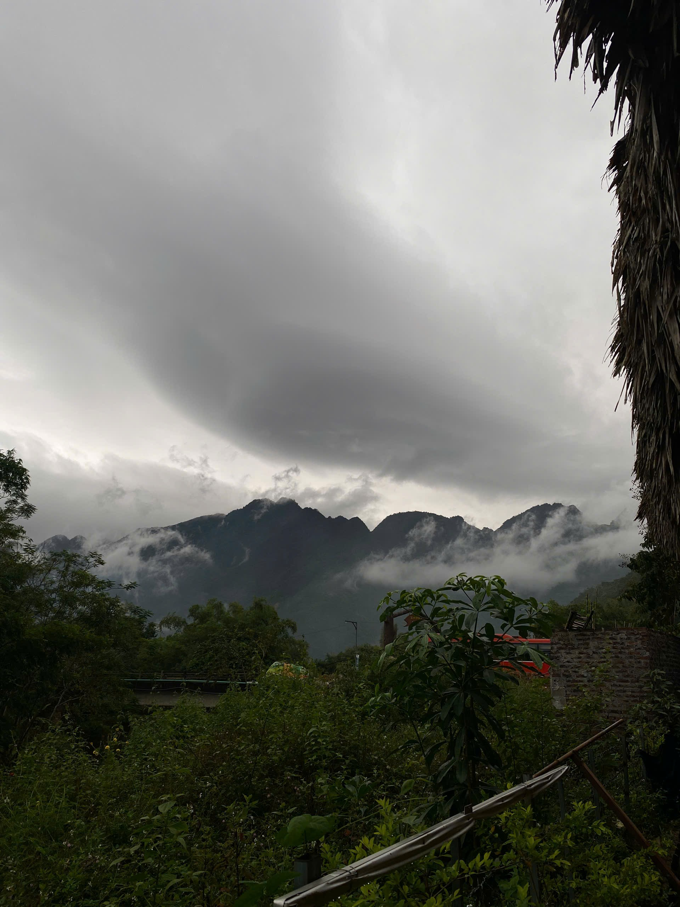
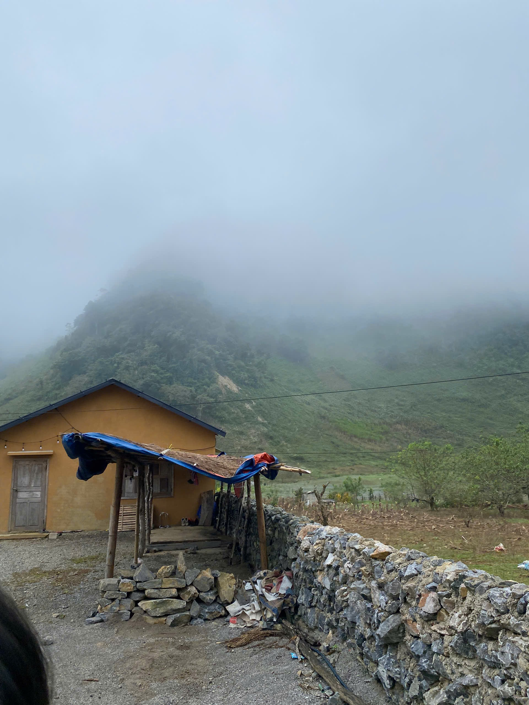
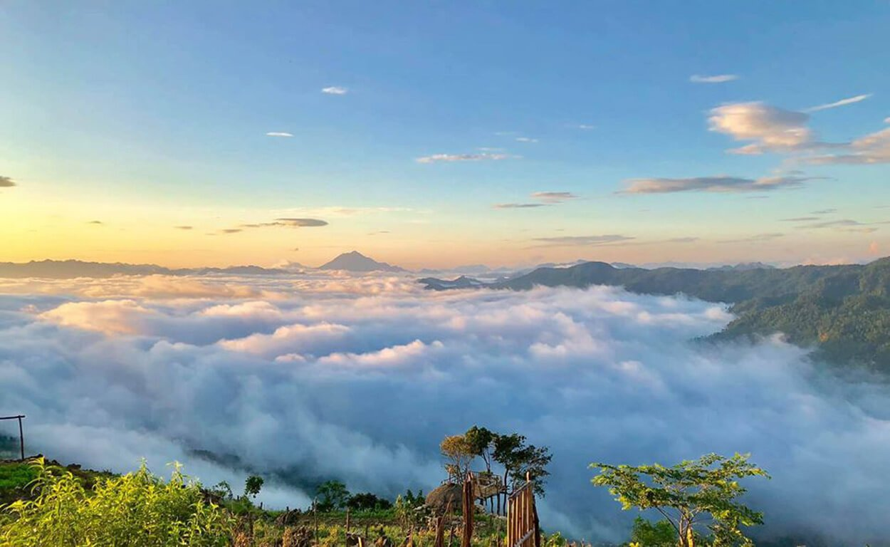

Sản phẩm NCKH • Du lịch số • Bảo tồn nghề thủ công Hmông
“Chạm” vào Di sản Hmông: Du lịch số với nghề thủ công tại Pà Cò
Khám phá điểm nghề, nghe thuyết minh, xem 360 và đặt trải nghiệm với cộng đồng theo hướng có trách nhiệm.
Điểm nhấn đề tài
Bảo tồnSố hoá tư liệu và tri thức nghề thủ công Hmông theo hướng tôn trọng cộng đồng.Ứng dụngKết nối bản đồ, ảnh/video, hồ sơ điểm và trải nghiệm thực tế trên cùng một nền tảng.Tác độngHỗ trợ truyền thông địa phương, nâng cao nhận thức và tạo giá trị sinh kế bền vững.
Giới thiệu khu vực nghiên cứu
Thuyết minh về Hang Kia - Pà Cò và trang phục truyền thống
Hang Kia - Pà Cò là khu vực vùng cao phía Tây Bắc, nổi bật với cảnh quan thiên nhiên hùng vĩ, khí hậu trong lành và bản sắc văn hóa đặc trưng của cộng đồng dân tộc Mông. Khu vực có độ cao trung bình khoảng 1.200-1.400m, được bao quanh bởi núi đá vôi, thung lũng xanh và các cung đường uốn lượn theo sườn núi.
Theo nội dung thuyết minh, Hang Kia - Pà Cò nằm gần ranh giới giữa các tỉnh Tây Bắc, cách Hà Nội khoảng 150km. Điều kiện địa hình và khí hậu nơi đây phù hợp để phát triển du lịch cộng đồng, du lịch sinh thái và trải nghiệm văn hóa bản địa.

Hình 1. Địa hình núi cao tại khu vực Pà Cò.
Điều kiện tự nhiên và cảnh quan
Khí hậu mát mẻ quanh năm, nhiệt độ trung bình khoảng 18-22°C. Vào sáng sớm hoặc sau mưa, hiện tượng biển mây xuất hiện dày đặc trên các sườn núi và thung lũng, tạo nên giá trị cảnh quan đặc sắc cho hoạt động du lịch khám phá.

Hình 2. Nhà của nghệ nhân dưới chân núi phủ kín mây.
Bản sắc cộng đồng và sinh kế du lịch
Người dân địa phương vẫn duy trì nhiều phong tục truyền thống như chợ phiên, sinh hoạt cộng đồng, trang phục dân tộc và các nghi lễ văn hóa. Từ nền tảng nông nghiệp truyền thống, cộng đồng đã từng bước mở rộng sang homestay, hướng dẫn trải nghiệm bản làng và giới thiệu sản phẩm thủ công phục vụ khách tham quan.
Hình 3. Mô hình homestay cộng đồng tại khu vực nghiên cứu.
Du lịch tại Hang Kia - Pà Cò phát triển theo hướng du lịch cộng đồng và du lịch trải nghiệm. Du khách không chỉ ngắm cảnh mà còn có cơ hội tìm hiểu đời sống bản địa, tham gia hoạt động thêu dệt, thưởng thức ẩm thực địa phương và trải nghiệm phiên chợ vùng cao.

Hình 4. Địa điểm săn mây tại Pà Cò.
Nghề may mặc và trang phục truyền thống người Mông
Trang phục truyền thống người Mông được làm chủ yếu từ vải lanh qua nhiều công đoạn thủ công: tước sợi, se sợi, dệt, nhuộm chàm và thêu hoa văn. Họa tiết thường là các hình học cách điệu, thể hiện quan niệm thẩm mỹ, mối liên hệ với thiên nhiên và đời sống cộng đồng.
Hình 5. Trang phục truyền thống của người Mông.
Sau khi nhuộm vải, phụ nữ Mông thực hiện công đoạn thêu tay với các sắc màu đỏ, vàng, xanh lá, trắng. Hoa văn không chỉ mang tính trang trí mà còn phản ánh quan niệm về vũ trụ, thiên nhiên và đời sống cộng đồng.
Hình 6. Họa tiết và hoa văn trên trang phục truyền thống.
Trang phục nữ có cấu trúc cầu kỳ với áo, váy xòe xếp ly, tạp dề, khăn đội đầu và trang sức bạc. Trang phục nam giản dị hơn nhưng vẫn giữ sắc chàm đặc trưng và điểm nhấn thêu trong các dịp lễ hội. Hệ giá trị thủ công này vừa là di sản văn hóa sống, vừa là nguồn lực phát triển du lịch có trách nhiệm.
Hình 7. Trang phục truyền thống của nữ.
So với trang phục nữ, trang phục nam giới Mông thường đơn giản hơn với áo chàm dài tay, quần rộng và khăn đội đầu. Trong dịp lễ hội, trang phục nam cũng được nhấn bằng các chi tiết thêu hoặc viền trang trí.
Hình 8. Trang phục truyền thống của nam.
Định hướng phát triển
Giá trị nổi bật của khu vực nằm ở sự kết hợp giữa cảnh quan, văn hóa và nghề truyền thống. Việc số hóa dữ liệu điểm đến, tư liệu hình ảnh và tri thức bản địa sẽ hỗ trợ quảng bá du lịch bền vững, đồng thời góp phần bảo tồn bản sắc cộng đồng trong dài hạn.
Ảnh và Video khu vực nghiên cứu
Đây là khu vực trưng bày ảnh/video tư liệu. Bạn chỉ cần thay các khung placeholder bằng ảnh thật hoặc iframe video.
Ảnh tư liệu 1
Ảnh tư liệu 2
Video tư liệu 1
Video tư liệu 2
Lộ trình
Chọn nhu cầu chuyến đi để nhận gợi ý lộ trình phù hợp.